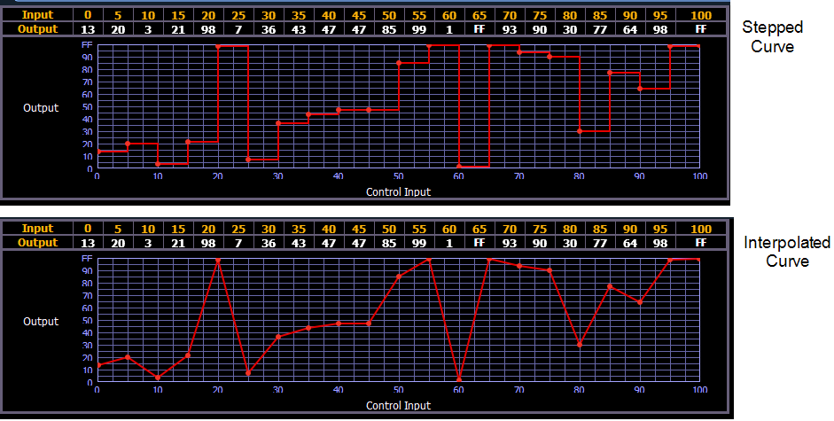

Once selected and displayed in the CIA, you can edit a curve from the keypad. Points are established in increments of five. You can add more points from the keypad.
You can specify points and adjust their levels in the command line or you may use the keys below to alter the curve:
Once a curve is displayed in the CIA, you can press {Edit} to edit the curve in the editor display.
In the curve editor you can trace the desired shape of the curve using your finger or a mouse on the touchscreen. As you progress through drawing the curve, intensity values will be added for existing points on the curve. If you add points to the curve (from the keypad) those points will be adjusted as well.
You can also toggle between an “interpolated” or “stepped” curve shape. Eos defaults to “interpolated”. To switch to “stepped”, press the {Stepped} softkey. Once pressed, this softkey changes to {Interpolated}, which allows you to switch back.
Below are two examples of the same curve. The first is stepped and the second is interpolated.

At any time, you can clear a curve from the curve editor display by pressing the {Clear Points} softkey. This will return the curve to its original linear shape or to its default shape if it is a pre-established curve.